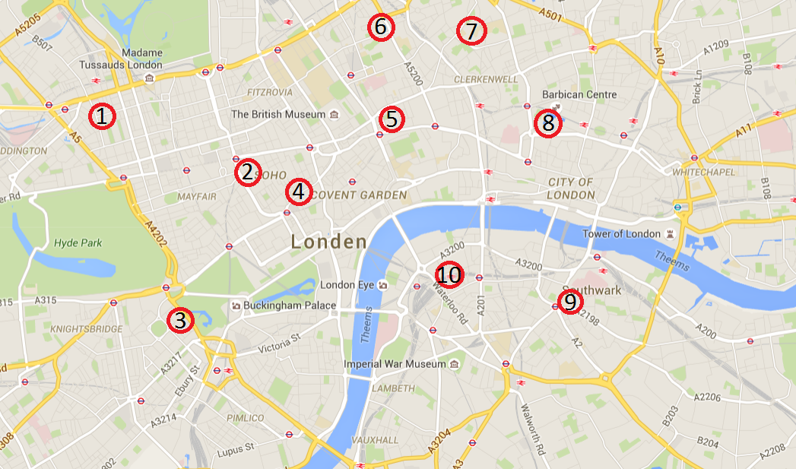

De uitgaansplekjes van London
Hier ziet u een kaart met al de populairste uitgaanslocaties van London.
Door op een nummer te klikken zal u doorverwezen worden naar een pagina waarop je extra uitleg vindt over deze uitgaansplaats.
Hier ziet u een kaart met al de populairste uitgaanslocaties van London.
Door op een nummer te klikken zal u doorverwezen worden naar een pagina waarop je extra uitleg vindt over deze uitgaansplaats.